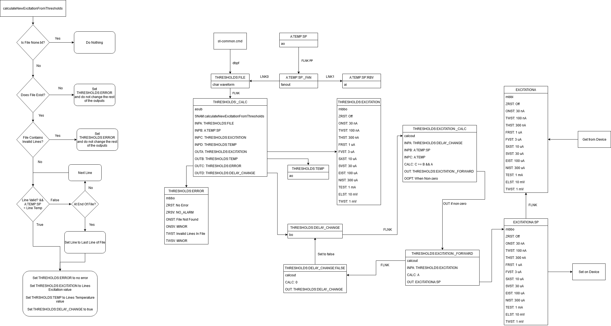

Lakeshore 340
The Lakeshore 340 is a device used by LET to monitor the temperature of a sample when it is being cooled by a dilution fridge inside the 9T magnet.
This Lakeshore has four measurement channels, each of which exposes a temperature and a raw measurement (usually a resistance from a thermocouple). The device supports multiple independent temperature control loops, however, we only use one of these loops.
The device itself has a large amount of functionality, however, the IOC (and corresponding LabVIEW driver) only expose a fraction of it. The functionality exposed by the drivers is:
Set and read back a temperature setpoint (it only ever sets and reads back the setpoint for control loop 1).
Reads 4 temperature channels
Reads the “raw” (resistance) measurements from these same 4 channels
Set and read P, I and D values
Set and read the PID mode (one of
Manual PID,Zone,Open Loop,Auto-tune PID,Auto-tune PIorAuto-tune P)Set and read whether the control loop is on
Set and read the maximum temperature setpoint
Reads the heater output as a percentage
Set and read maximum heater power as a percentage
Terminators are CR LF
The device uses a 9-pin male serial cable (female connector on device) and requires a null modem.
Excitations
The MuSR Lakeshore 340 excitations need to be able to be controlled in two ways:
Set and get the value of the excitation for input A (via the OPI or a block)
Define temperature setpoint thresholds and excitation pairs
Excitations Temperature Threshold File
You can find examples in the Lakeshore 340 support module lakeshore340\excitation_thresholds. More details here.
Excitations IOC records and algorithm
You can view a diagram describing how the original VI worked here.
The asub record THRESHOLDS:_CALC calculates and sets the thresholds. The function the record contains also checks conditions such as the file containing invalid lines, the file not existing and whether the file is None.txt (the default which says to not do anything).
The THRESHOLDS:_CALC record is triggered into processing by the setting of A:TEMP:SP and THRESHOLDS:FILE (written to via dbpf from st-common.cmd). For how the thresholds file is read see here and diagram below. Once the values are calculated they are set into THRESHOLDS:TEMP and THRESHOLDS:EXCITATION or if there is an error THRESHOLDS:ERROR. The IOC then waits for the temperature to reach the setpoint before writing the excitation to EXCITATIONA:SP, this mechanism is documented in the diagram below.
